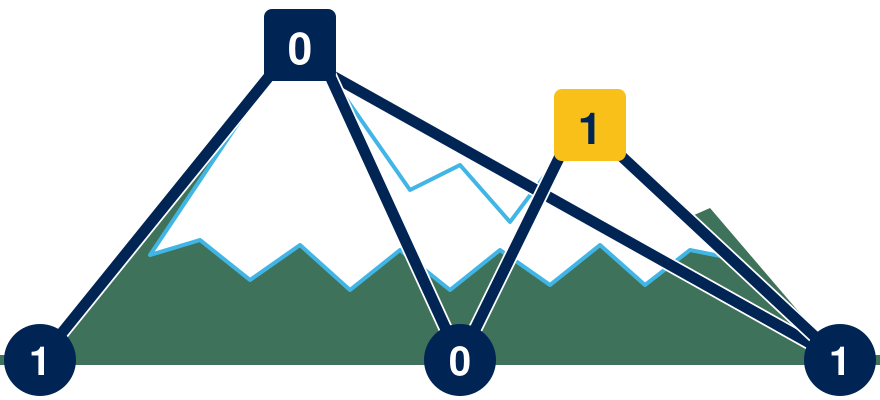

LIMITS Lab
Limits of Information and Trusted Distributed Systems
Research in information theory, communication, learning, inference, and optimization for distributed systems under communication and adversarial constraints.
We develop theory and algorithms for distributed learning and inference under communication constraints, adversarial behavior, and structured models (e.g., sparsity and low rank).
About
- PI: Prof. Mayank Bakshi
- Office: SICCS 221, Flagstaff, AZ
- Research interests: information theory; distributed systems; learning and inference under communication and adversarial constraints
- Email: mayank.bakshi@nau.edu

People
Principal investigator
Mayank Bakshi
Assistant Professor, School of Informatics, Computing, and Cyber Systems
Graduate students
Shoaib Imran
Ph.D. Student, Informatics and Computing (Electrical Engineering)
Shoaib is a Ph.D. student in Informatics and Computing (Electrical Engineering) at Northern Arizona University. His research interests include distributed optimization and learning, with interests in adversarial networked systems, information theory, and statistical machine learning. Before joining NAU, he received his M.S. in Electrical Engineering from Arizona State University and BSc in Electrical Engineering from LUMS University.
My work studies fundamental limits and practical algorithms for learning, inference, and optimization in networked systems with communication constraints and adversarial uncertainty.
- Distributed learning under adversaries: Byzantine-robust and poisoning-resilient methods; limits and tradeoffs.
- Adversarial sensing/estimation: robust detection and hypothesis testing with worst-case channel/state variation.
- Coding for learning and inference: error correction ideas for reliability and efficiency in distributed pipelines.
- Structured recovery: sparse recovery and low-rank recovery; structured estimation and inference.
- Physical-layer security: adversarial channel models and information-theoretic security.
- Optimization over networks: communication-efficient distributed optimization and statistical limits.
Openings
All positions are currently filled. I am glad to hear from students and collaborators interested in mentorship or collaboration on topics related to the lab's work. Email me a short note and your CV.
Teaching
- Fall 2025: EE 443/543 — Foundations of Intelligent Systems / Pattern Recognition
- Spring 2026: EE 448 — Digital Signal Processing
- Spring 2026: EE 436/536 — Communication Systems
- Fall 2026: EE 443/543 — Foundations of Intelligent Systems / Pattern Recognition
Contact
Email is the best way to reach me.
- Email: mayank.bakshi@nau.edu
- CV: CV_Mayank_Bakshi.pdf
- Google Scholar: scholar.google.com
- Address: School of Informatics, Computing, and Cyber Systems, Room 221 (SICCS), Northern Arizona University, Flagstaff, AZ, USA